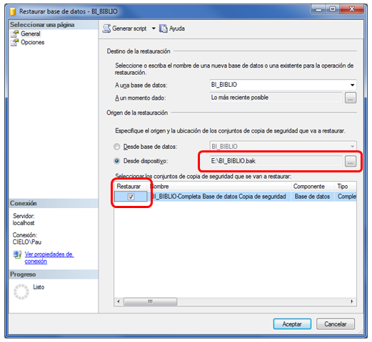
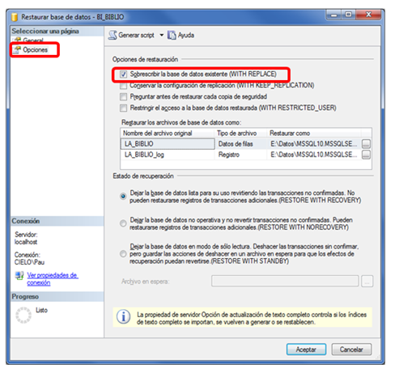
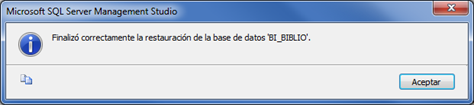
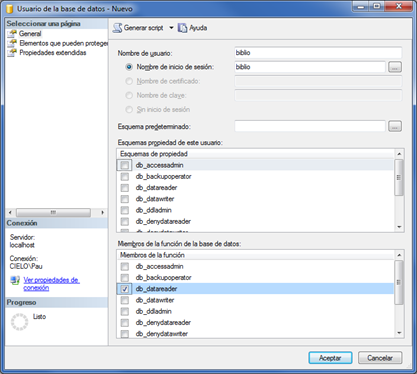
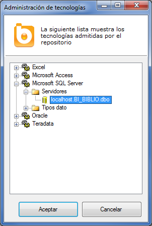
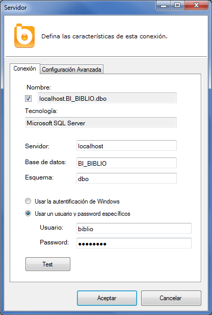
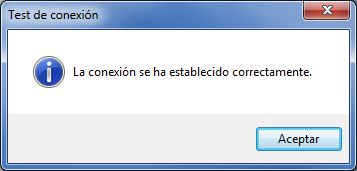
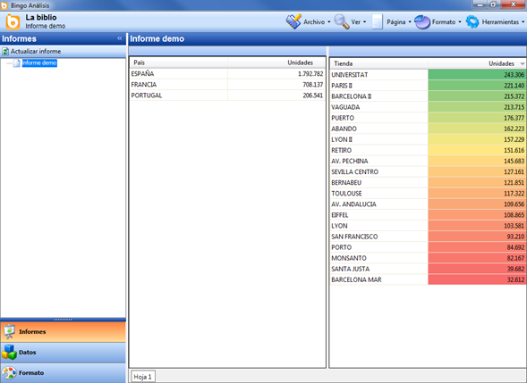

LA BIBLIO
LA BIBLIO es una aplicación de ejemplo que incluye Bingo Intelligence para poder dar los primeros pasos con la plataforma. Con este ejemplo, se puede experimentar sobre cómo construir un cuadro de mando , y conocer todas las funcionalidades de esta aplicación de Business Intelligence.
Como toda aplicación de Bingo Intelligence, este ejemplo utiliza un catálogo para acceder a la base de datos. Gracias al catálogo, el usuario final no necesita conocer la estructura de la base de datos ni el lenguaje SQL, y puede construir informes arrastrando las dimensiones e indicadores que quiere incluir en su informe.
El catálogo de la BIBLIO también sirve de ejemplo para conocer cómo funcionan y cómo se construyen los catálogos de Bingo Intelligence.
Para poder hacer servir este ejemplo es necesario instalar la base de datos BI_BIBLIO en un servidor SQL Server. Evidentemente, puede instalarse en el mismo servidor donde se encuentra el repositorio de Bingo Intelligence, aunque puede importarse en cualquier otro servidor que sea accesible desde el servidor Bingo.
Instalar la base de datos BI_BIBLIO
Para realizar la instalación de esta base de datos de ejemplo, conviene estar familiarizado con la administración de bases de datos SQL Server.
El proceso de instalación es sencillo. Sólo hace falta descargarse una copia de la base de datos, y restaurarla en una base de datos vacía.
En primer lugar, se tiene que descargar la copia correspondiente a la versión de SQL Server donde se quiere instalar la base de datos:
- Copia de seguridad de BI_BIBLIO (para Microsoft SQL Server 2008 R2)
- Copia de seguridad de BI_BIBLIO (para Microsoft SQL Server 2008)
- Copia de seguridad de BI_BIBLIO (para Microsoft SQL Server 2005)
Una vez descargada la copia adecuada, los pasos a seguir son:
- Descomprimir el fichero BI-BIBLIO.BAK del archivo ZIP recién descargado
- Abrir el “SQL Server Management Studio”
- Crear una base de datos nueva llamada BI_BIBLIO.
- Sobre la base de datos recién creada, seleccionar la opción “Tareas/Restaurar/Base de datos”, y se abrirá el formulario de restauración de bases de datos.
En este formulario, se tiene que seleccionar la copia que hemos descargado previamente (con extensión .BAK), y seleccionar la opción de sobrescribir la base de datos existente, tal y como muestran las siguientes imágenes:


Al finalizar la restauración, debe aparecer este mensaje:

Una vez restaurada la base de datos, se tiene que crear el “inicio de sesión” que utilizará Bingo para conectarse. Este usuario únicamente necesita acceso de lectura a la base de datos:

Configuración de la conexión desde Bingo Análisis
Una vez creada la base de datos, se tiene que configurar la conexión que utiliza el catálogo “LA BIBLIO” para conectarse a la base de datos.
Para modificar la conexión, se debe abrir Bingo Análisis, y seleccionar la opción “Bases de datos/Administración de tecnologías” del menú “Herramientas”.

Con el botón derecho, podemos acceder a las propiedades de ese “servidor”, y configurar las propiedades de conexión de esa base de datos:

Si se han realizado correctamente los pasos anteriores, debe aparecer el siguiente mensaje al hacer un “test” de la conexión.

Verificación de la instalación
En este momento, ya se puede verificar que todo está funcionando adecuadamente. Para ello, podemos abrir cualquier informe de la aplicación LA BIBLIO, y comprobar si efectivamente se muestra información:

Para mostrar estos datos, el cliente ha realizado la petición al servidor de Bingo Intelligence, y éste ha realizado la consulta a la base de datos con los parámetros de conexión que se han definido. Las consultas a la base de datos siempre las realiza el servidor Bingo, por lo que es posible acceder a estos informes incluso remotamente, y sin conexión directa con la base de datos.